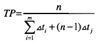
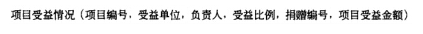

计组
在CPU中用于跟踪指令地址的寄存器是程序计数器（PC)。
为实现程序指令的顺序执行，CPU程序计数器（PC)中的值将自动加1。
程序计数器（PC)存放CPU下一条要执行的指令地址，在顺序执行程序中当其内容送到地址总线后会自动加1，指向下一条将要运行的指令地址；
指令寄存器（IR）用于暂存正在执行的指令，
地址寄存器（AR）用来保存当前CPU所访问的内存单元的地址。保存当前正在执行的一条指令，而指令一般包括操作码和地址码两部分，因此这两部分均存放在IR中。
在CPU中，常用来为ALU执行算术逻辑运算提供数据并暂存运算结果的寄存器是累加寄存器
计算机系统中的CPU内部对通用寄存器的存取操作是速度最快的，其次是Cache，内存的存取速度再次。
补码表示定点小数范围是：[-1,(1-2(-n+1))]，这个范围一共有2^n个数。
Cache的地址映像方式中，发生块冲突次数最小的是全相联映像
计算机中CPU的中断响应时间指的是从发出中断请求到开始进入中断处理程序的时间。
相联存储器是指按内容访问的存储器；其工作原理就是把数据或数据的某一部分作为关键字，将该关键字与存储器中的每一单元进行比较，找出存储器中所有与关键字相同的数据字。相联存储器可用在高速缓冲存储器中；在虚拟存储器中用来作段表、页表或快表存储器；还用在数据库和知识库中。
常用的虚拟存储器由主存-辅存两级存储器组成。
位于CPU与主存之间的高速缓冲存储器（Cache)用于存放部分主存数据的拷贝，主存地址与Cache地址之间的转换工作由硬件完成。
±0编码相同的是补码和移码。
中断向量可提供中断服务程序的入口地址。
为了便于实现多级中断嵌套，使用堆栈来保护断点和现场最有效。
通用寄存器常用于暂存运算器需要的数据或运算结果，
地址寄存器和数据寄存器用于访问内存时的地址和数据暂存，
指令寄存器用于暂存正在执行的指令，
程序计数器中存放的执行的指令的地址。
①立即寻址：是一种特殊的寻址方式，指令中在操作码字段后面的部分不是通常意义上的操作数地址，而是操作数本身，也就是说数据就包含在指令中，只要取出指令，也就取出了可以立即使用的操作数。（操作数包含在指令中的寻址方式是立即寻址）
②直接寻址：在直接寻址中，指令中地址码字段给出的地址就是操作数的有效地址，即形式地址等于有效地址。（获取操作数最快）
③间接寻址：间接寻址意味着指令中给出的地址A不是操作数的地址，而是存放操作数地址的主存单元的地址，简称操作数的地址的地址。
④寄存器寻址：寄存器寻址指令的地址码部分给出了某一个通用寄存器的编号Ri，这个指令的寄存器中存放着操作数。
⑤寄存器间接寻址：在寄存器间接寻址方式中，寄存器内存放的是操作数的地址，而不是操作数本身，即操作数是通过寄存器间接得到的。
⑥变址寻址：变址寻址就是把变址寄存器Rx的内容与指令中给出的形式地址A相加，形成操作数有效地址，即EA=（Rx）+A。
⑦基址寻址：基址寻址就是将基址寄存器Rx的内容与指令中给出的位移量D相加，形成操作数有效地址，即EA=（Rb）+D。
⑧相对寻址：相对寻址是基址寻址的一种变通，由程序计数器提供基准地址，指令中地址码字段作为位移量D，两者相加后得到操作数的有效地址，即EA=（PC）+D。
[归纳总结] 所谓寻址，指的是寻找操作数的地址或下一条将要执行的指令地址。
各种不同的寻址方式获取操作数的速度是不相同的，在这四种寻址方式中，获取操作数的速度由快至慢依次为立即寻址、寄存器寻址、直接寻址、间接寻址。
DMA(Direct Memory Access，直接存储器访问)工作方式下，在主存与外设之间建立了直接的数据通路。
软工
在概要设计阶段选择适当的解决方案，将系统分解为若干个子系统，建立整个系统的体系结构。
风险的优先级通常是根据风险暴露（Risk Exposure）设定
数据流图（DFD）的作用是：描述对数据的处理流程
PERT图可以清晰地表示各任务的开始时间和结束时间以及各任务之间的依赖关系，但是无法很好地表示各任务之间的并行情况。
需求分析阶段 完成数据流图（DFD图）和数据字典，用于描述企业的各项业务流程和使用的数据；
概念设计阶段 用E-R图或UML图描述企业应用中的实体及其联系；
逻辑设计 是指设计关系模式及相关视图；
物理设计 是指设计数据的物理组织，如索引等。
需求分析就是对企业应用的调查和分析，并进行规范的整理，
以数据流图的形式描述企业各项业务的进行过程，
以数据字典形式对业务过程中使用的数据进行详细的描述。
关键路径：从开始顶点到结束顶点的最长路径为关键路径(临界路径)，关键路径上的活动为关键活动。
一般可将耦合度从弱到强分为以下7级：
①非直接耦合：指两个模块中任一个都不依赖对方独立工作。这类耦合度最低。
②数据耦合：指两个模块间只是通过参数表传递简单数据。
③特征耦合：指两个模块都与同一个数据结构有关。
④控制耦合：指两个模块间传递的信息中含有控制信息。
⑤外部耦合：指若干模块都与同一个外部环境关联，例如I/O处理使所有I/O模块与特定的设备、格式和通信协议相关联。
⑥公共耦合：指两个或多个模块通过引用一个公共区的数据而发生相互作用。
⑦内容耦合：最高耦合度的是内容耦合。
出现内容耦合的情形包括：
一个模块使用另一模块内部的控制和控制信息；
一个模块直接转移到另一模块内部等。
一般说来，尽量使用数据耦合，少用控制耦合，限制外部耦合，完全不用内容耦合。
模块独立性是创建良好设计的一个重要原则，一般采用模块间的耦合和模块的内聚两个准则进行度量。
内聚是指模块内部各元素之间联系的紧密程度，内聚度越高，则模块的独立性越好。
内聚性一般有以下几种：
①偶然内聚：指一个模块内的各个处理元素之间没有任何联系。
②逻辑内聚：指模块内执行几个逻辑上相似的功能，通过参数确定该模块完成哪一个功能。
③时间内聚：把需要同时执行的动作组合在一起形成的模块。
④通信内聚：指模块内所有处理元素都在同一个数据结构上操作，或者指各处理使用相同的输入数据或者产生相同的输出数据。
⑤顺序内聚：指一个模块中各个处理元素都密切相关于同一功能且必须顺序执行，前一个功能元素的输出就是下一个功能元素的输入。
⑥功能内聚：是最强的内聚，指模块内所有元素共同完成一个功能，缺一不可。
Putnam和COCOMO都是软件成本估算模型。
Putnam模型是一种动态多变量模型，假设在软件开发的整个生存期中工作量有特定的分布。
结构性成本模型COCOMO模型分为基本COCOMO模型、中级COCOMO模型和详细COCOMO。
基本COCOMO模型是一个静态单变量模型，对整个软件系统进行估算；
中级COCOMO模型是一个静态多变模型，将软件系统模型分为系统和部件两个层次，系统由部件构成；
详细COCOMO模型将软件系统模型分为系统、子系统和模块三个层次，除了包括中级模型所考虑的因素外，还考虑了在需求分析、软件设计等每一步的成本驱动属性的影响。
操作系统
1.在每个箭头上标号信号量，四个箭头，所以设置四个信号量S1,S2,S3,S4。标信号量的原则：从左到右，从上到下。
2.每个箭头的起点和终点分别对应V（si）、P(si).
如何理解？
P操作是申请一个资源，V操作是释放一个资源。
P等V做。
a：p1的执行不需要等，p1执行后形成v(s1)
b：p2的执行不需要等，p2执行后形成v(s2)
c：p3的执行需要等,即p(s1)p（s2）,
d：p3的执行执行后形成v(s3)v(s4)
e：p4的执行需要等,即p(s3)
f：p4的执行需要等,即p(s4)
未修改过的页面内存与辅存一致，故淘汰时无须写回辅存，使系统页面置换代价小。
利用PV操作实现进程的同步时，进程可以通过调用P操作测试消息是否到达，调用V操作通知消息已经准备好。
系统可靠性：
由于子系统构成串联系统时，其中任何一个子系统失效就足以使系统失效，其可靠度等于各子系统可靠度的乘积；
构成并联系统时，只要有一个子系统正常工作，系统就能正常工作，设每个子系统的可靠性分别以R1，R2，…，RN表示，则整个系统的可靠度由下式来求得： R=1-(1-R1)(1-R2)…(1-RN)

式中m为流水线的段数；n为输入的指令数；△ti为第i段所需时间；△tj为该段流水线中瓶颈段的时间。
完成第1条指令需要的操作时间为(1+3+1+2+1)△t，
从第2条开始，为了获得最大吞吐率，指令在流水操作中应该看最长子过程所用时间（即3△t），每隔3△t便完成1条指令，一共有(n-1)条，所以总时间为(1+3+1+2+1)△t+(n-1)*3△t。
计网
DHCP协议的功能是自动分配IP地址；
FTP协议的作用是文件传输，使用的传输层协议为TCP。
SSH协议在终端设备与远程站点之间建立安全连接。是建立在应用层和传输层基础上的安全协议
ARP协议属于网络层协议，它的作用是实现IP地址与MAC地址之间的变换。
浏览网页、Telnet远程登录以及发送邮件应用均不允许数据的丢失，需要采用可靠的传输层协议TCP,
而VoIP允许某种程度上的数据丢失，采用不可靠的传输层协议UDP。
VLAN（虚拟局域网）的叙述中，属于其优点的是允许逻辑地划分网段
网桥是数据链路层设备，能识别数据链路层协议数据单元，并根据数据链路层地址进行数据转发。
集线器是一种物理层设备，它的作用是从一个端口接收信息,并向其他端口广播出去。集线器不解释所传送信息的含义，也不能识别任何协议数据单元。集线器的各个端口构成一个冲突域，即只能有一个端口发送数据，如果有两个以上端口同时发送，就冲突了。
交换机是一种多端口网桥，任何一对端口之间都能进行数据转发。交换机的各个端口构成一个广播域，但不是冲突域，即可以有多个端口同时发送数据而不会出现冲突。
“三网合一”是将电信网、广播电视网以及互联网进行整合，实现业务互联互通的一种网络解决方案。
利用报文摘要算法生成报文摘要的目的是防止发送的报文被篡改。
防火墙通常分为内网、外网和DMZ三个区域，按照受保护程度，从高到低正确的排列次序为内网、DMZ和外网。
若CPU要执行的指令为：MOV R1,#45(即将数值45传送到寄存器R1中），则该指令中采用的寻址方式为寄存器寻址和立即寻址。
题目给出的指令中，R1是寄存器，属于寄存器寻址方式，45是立即数，属于立即寻址方式。
其他
单链表中，增加头结点的目的是为了运算上的方便
Windows用户组默认权限由高到低的顺序是：administrators—power users— users—everyone。
按照接口的连接对象来分，一般可以将I/O接口分为串行接口、并行接口、键盘接口和磁盘接口
若程序运行时系统报告除数为0，这属于 运算对象不匹配错误。
根据基本结构特征，并行处理计算机可分为 多处理机，阵列处理机，流水线计算机和数据流计算机四种不同的结构。
基于构件的软件开发，强调使用可复用的软件“构件”来设计和构建软件系统，对所需的构件进行合格性检验、_适应性修改_，并将它们集成到新系统中。
数据库是长期存储在计算机内的、有组织、可共享的数据集合
数据库管理系统(DBMS)是位于 用户和操作系统之间的—层管理软件，它是一种 结构化 的数据。
Unix与Linux的主要区别不是： Unix主要是运行在微机上的，而Linux主要是运行在小型机上的
整个数据仓库系统的核心是数据的存储与管理
数据库语言主要包括两部分，其中 数据描述语言 用于负责描述和定义数据库的各种特性，数据操纵语言用于说明对数据进行的各种操作
木马病毒：木马病毒会破坏文件、木马病毒会删除文件、木马病毒可以自动删除电脑上的.dll、.ini、.exe文件
以太网的特点： 随机争用共享通道、具有载波监听和碰撞检测的功能、 实行1-坚持的策略
在线性表中最常用的操作是在最后一个元素之后插入一个元素和删除第一个元素，则采用 仅有尾指针的单循环链表 存储方式最节省运算时间。
任何一个无向连通图的最小生成树 有一棵或多棵 。（无向连通图一定有最小生成树。）
双绞线是计算机网络中常用的有线通信介质，其绞合的目的是减少外界干扰。
各通用顶级域名中， net表示网络机构；com表示商业机构；gov表示非军事的政府机构；org表示非营利组织。
电子邮件应用程序利用POP3协议接收邮件。SMTP(简单邮件传输协议)、POP3(邮局协议)和IMAP(Internet邮件访问协议)由TCP/IP协议族定义的
目前，被国际社会广泛认可和应用的通用压缩编码标准大致有如下四种：H.261、JPEG、MPEG和DVI。
数据的独立性是指用户的应用程序和存储在外存上的数据库中的数据；它又可分为逻辑数据独立性和物理数据独立性
设计E-R图的过程中，需要确定实体所具有的属性，这一抽象称为聚集；
再从相关实体中抽象出子类和父类，这一过程称为概括。
当某程序执行时，利用重定位存储管理方式来访问内存，是将起始地址与有效地址相加得到物理地址来进行访问的。
ARP表用于建立IP地址到MAC地址的映射
CPU中的数据总线宽度会影响系统的运算速度（数据总线宽度越大，单位时间内能进出CPU的数据就越多，系统的运算速度越快。）
病毒的发展经历了三个阶段，DOS时代、 Windows时代、Internet时代。
CPU与I/O设备间的接口是设备控制器 ，它接收从CPU发来的命令，然后去控制I/O设备工作，从而使处理机从繁杂的设备控制事务中解脱出来。
数据模型的三要素指 数据结构、数据操作、数据完整性约束 ；其中数据结构是对数据系统的静态特性的描述， 数据操作 是对数据库系统的动态特性的描述。
操作系统的作用：可用作扩充机器、计算机系统资源的管理者、不同用户之间的交流、 用户与计算机硬件系统之间的接口
海明校验码：2k-1≥n+k （信息位为k，冗余校验位为r）
一般来说，软件开发环境都具有层次式的结构，通常软件开发环境可分为四层：宿主层；核心层；基本层和应用层。用户层
多形病毒是一种较为高级的病毒，这种病毒在每次感染后会改变自己。
FLOYD算法的时间复杂度为n3。
将数据库对象的操作权限授予用户，属于安全控制机制中的自主存取控制
数据仓库的基本特点：
数据仓库存储的信息是面向主题来组织的；
数据仓库中要有一处专门用来存储5至10年或更久的历史数据，以满足各种数据需求；
数据仓库中的数据具有一致性的特点
数据仓库可进行改动
数据的独立性是指 逻辑数据独立性和物理数据独立性是相互独立的；它又可分为用户的应用程序和存储在外存上的数据库中的数据
分布式数据库用户无需知道数据的物理位置，称为位置透明
PC处理的音频信号主要是入耳能听得到的音频信号，它的频率范围是20Hz～20kHz
数据库数据字典由基本表和用户可存取的视图组成，它 只读
物理层传输的数据单位是比特
采用UML进行软件设计时，可用 泛化关系表示两类事物之间存在的特殊/一般关系，用聚集关系表示事物之间存在的整体/部分关系。
对于无序接收的滑动窗口协议，若序号位数为n，则发送窗口最大尺寸为2n-1。
TCP/IP体系结构中的TCP和IP所提供的服务分别为运输层服务和网络层服务。
在统一建模语言(UML)中， 用例图用于描述系统与外部系统及用户之间的交互。
关系中的各元组的顺序可以任意排列。
从计算机系统执行程序的角度看，并行性等级由高到低可分为作业或程序之间，任务或进程之间，指令之间，指令内部四类。
SQL-99标准规定的事务的四个隔离级别中，能解决幻影读现象的级别是SERIALIZABLE。
事务的四个隔离级别从READ UNCOMMITTED、READ COMMITTED、REPEATABLE READ到SERIALIZABLE，逐级加强，依次解决丢失修改、读脏数据、不可重复读、读幻影四个不一致问题，且后一级别同时解决了前一级别己解决的问题。
在人工管理阶段，数据是 无结构的 ；而在数据库系统阶段，数据是整体结构化的。
计算机感染特洛伊木马后的典型现象是有未知程序试图建立网络连接 。
运行Web浏览器的计算机与网页所在的计算机要建立 TCP 连接，采用 HTTP 协议传输网页文件。
栈(Stack)是限定仅在 表尾 进入插入或删除操作的线性表。
针对分布式事务，要求提供参与者状态的协议是三阶段提交协议
一个B类网络的子网掩码为255.255.224.0，则这个网络被划分成了 8 个子网。
子网掩码255.255.224.0的二进制表示为11111111.11111111.11100000.00000000，比正常的B类网络的正常子网掩码255.255.0.0多出了3位“1”，所以把B类网络划分成了8个子网。
CASE(Computer Aided Software Engineering)是计算机辅助软件工程技术的简称。
在下列进程调度算法中，可能引起进程长时间得不到运行的算法是可抢占式静态优先数法
文件的存储方法依赖于 文件的逻辑 和 文件的物理结构。
编译是将高级语言源程序翻译成机器语言程序(汇编形式或机器代码形式)，反编译是编译的逆过程。
反编译通常不能把可执行文件还原成高级语言源代码，只能转换成功能上等价的汇编程序。
计算机病毒通常附着在其他文件中，而特洛伊木马一般是放在某个用户信任的应用程序中
IP地址和域名：
每台主机都有唯一的IP地址；
一台主机只有一个IP地址，但可以有多个域名，即一个IP可对应多个域名；
每个域名对应一个IP地址；
有的IP并没有域名与之对应。
在微型计算机中，软件分为系统软件和应用软件
为防止非法用户进入数据库应用系统，应采用的安全措施是用户标识与鉴别
连接数据库过程中需要指定用户名和密码，这种安全措施属于 用户标识与鉴别
连接数据库时的安全验证是通过_用户标识与鉴别_来实现的。
某有向强连通图有n个顶点，则其边数不小于n。
Unix的系统调用与DOS的中断调用的区别是：系统调用面向高级语言，而中断调用面向汇编语言。
风险分析在软件项目开发中具有重要作用，包括风险识别、风险预测、风险评估和风险控制等。
“建立风险条目检查表”是 风险识别 时的活动，“描述风险的结果”是 风险预测 时的活动。
对于一个持续处理业务的系统而言， 响应时间越短，作业吞吐量越大 ，表明其性能越好。
SQL99开始引入面向对象数据模型，之前的标准都是完全针对关系模型
按照网络的类型，我们可以将计算机网络分为基于服务器的网络和对等网络，现在大多数网络都采用的是 两者的结合 。
RISC（精简指令集计算机）设计应遵循的设计原则：
指令条数应少一些、寻址方式尽可能少、采用变长指令，功能复杂的指令长度长而简单指令长度短、设计尽可能多的通用寄存器
RISC的特点：
指令种类少
指令长度固定，指令格式少
只有取数/存数指令访问存储器，其余指令的操作都在寄存器之间存放
POP3服务默认的TCP端口号是110。
SQL语句“平均成绩BETWEEN 80.0 AND 90.0”表示平均成绩＞=80.0 AND平均成绩＜=90.0
存储器的读写速度，正确的排序是：光盘＜硬盘＜随机存取存储器Ram＜Cache
作业控制块(JCB)内容包括作业名，资源要求，资源使用情况，作业类型和级别，作业状态。
在各种软件开发方法中， 快速原型法能够大大减少软件系统的后期维护费用，使系统功能能正确反映用户的需求
B/S体系结构中属于客户端的是浏览器，Browser即浏览器，为客户端。
线程要运行必需的资源，它 不拥有系统资源，与同属一进程的其它线程 共享 进程所拥有的全部资源。
排序算法中，某一趟结束后未必能选出一个元素放在其最终位置上的是直接插入排序
设备管理中：一个系统可以有一个或几个缓冲池，一个缓冲池可有多个缓冲区。
某档机器编制的软件如果能不加修改地运行于比它高档的机器上称做向上兼容；
某档机器编制的软件如果能不加修改地运行于比它低档的机器上，则称做向下兼容；
若某时期投入市场的某型号机器上编制的软件能不加修改地运行于在它之前投入市场的机器上称做向前兼容；
若某时期投入市场的某型号机器上编制的软件能不加修改地运行于在它之后投入市场的机器上称做向后兼容。
一个关系模式可以有多个候选关键字，但只能有一个主关键字
中断自理过程可分为关中断，保留现场，转中断服务程序，恢复现场和开中断。
SQL是关系数据库的标准语言，它主要由数据定义语言，数据操纵语言和数据控制语言和一些其它语言要素组成
临界区是指进程中访问临界资源的代码
在微机中，中断过程包括中断请求、中断响应、中断处理、中断返回。
总线组成包括信号线、总线控制器、附属电路。信号线包括数据线、地址线和控制线。
数据字典的主要任务是管理有关数据的信息，其主要作用有 供数据库管理系统快速查找有关对象的信息； 供数据库管理员查询，以掌握整个系统的运行情况；支持数据库设计与系统分析。
在用电缆传输基带脉冲信号时，缆线越长，高频衰耗越 严重 ，通频带越 窄
脉冲编码调制的过程简单而言可分为采样，量化和编码 压缩
如果数据库应用系统的用户表中存有用户登录口令，则应该 只允许DBA直接查看登录口令
进程间和一个进程中的多个线程间都可以并发执行。
著名的网管软件： Open View 、Cisco Works 、Sun Net Manager VPN
Macro.Melissa是一种宏病毒，宏病毒感染的对象是使用某些程序创建的文本文档、数据库、电子表格等文件
CPU的有效地址长度为24位，故寻址范围为0～224-1
数据库系统必须控制事务的并发执行，保证数据库处于一致的状态。
为了方便用户管理，使用和控制文件，通常将文件分为若干类。
按文件中的数据形式，我们可以将文件分为源文件，目标文件和可执行文件
计算机系统中断概念：由I/O设备提出的中断请求是可屏蔽中断，电源断电是不可屏蔽中断
MIPS是衡量运算速度的一种单位（每秒百万条指令）
用户甲和乙之间分发共享密钥的方案：甲选取密钥后，通过双方事先已有的共享密钥加密后通过网络传送给乙
特洛伊木马一般分为服务器端和客户端，如果攻击主机为X，目标主机为Y，则Y为服务器端，X为客户端
USB Key 身份认证方式是一种方便、安全的身份认证技术。它采用软硬件相结合、一次一密的强双因子认证模式，很好地解决了安全性与易用性之间的矛盾。
通常，多媒体数据量较大。为了在有限的信道中并行开通更多业务，应该对多媒体数据进行_频率域 __压缩。
进行数据时间域压缩，有利于迅速传输媒体信源；
进行数据频率域压缩，有利于并行开通更多业务；
进行数据空间域压缩，有利于降低存储费用；
进行数据能量域压缩，以降低发射功率。
在计算机输出的声音中，属于合成声音的是：频率调制声音 、波表声音 、MIDI音乐 波形声音
软件需求说明书是需求分析阶段的最后成果，其应包含的内容： 数据描述、 功能描述 、 非功能描述。 系统结构描述
软件设计的主要任务是设计软件的结构、过程和模块，其中软件结构设计的主要任务是要确定_模块间的组成关系
内聚程度从低到高排序为：偶然内聚、逻辑内聚、时间内聚、通信内聚、顺序内聚及功能内聚。
软件测试是为了发现错误而执行程序的过程。检验软件是否满足用户需求的测试称为确认测试。
若磁盘的转速提高一倍，则 平均寻道时间不变 。
目前企业信息化系统所使用的数据库管理系统的结构，大多数为_ 关系结构 。
在数据库系统中，数据库管理系统(DBMS)和操作系统(OS)之间的关系为_DBMS调用OS 。
某企业计划构建一个网络化的、开放式数据存储系统，要求对数据操作的时延短、采用专用网络连接并能管理存储设备和存储管理子系统。针对该应用需求，采用_FC SAN_存储方式最合适。
使用WWW服务时需要使用HTTP传送页面文件。对于HTTP/1.0工作模式：使用TCP传送页面文件，每个页面文件单独建立TCP连接传送
在OSI参考模型中，以下功能需由传输层的相邻层实现的是对话同步管理
在OSI参考模型中，传输层的向下相邻层是网络层、向上相邻层是会话层。
会话层的主要功能是建立通信进程的逻辑名字与物理名字之间的联系，提供进程之间建立、管理和终止会话的方法，处理同步与恢复等问题。
网络层的主要功能是在源节点一目的节点之间进行路由选择、拥塞控制、顺序控制、传送包，从而保证报文的正确性。
控制单元(CU)通常由程序计数器(PC)、指令寄存器(IR)、指令译码器、状态/条件寄存器(PSW)、时序电路、微操作信号发生器等组成。
而多路转换器是运算器的组成部件。
计算机的主存容量取决于主存的地址位数。但主存的地址位数再多，CPU的访问指令提供的地址位数较少也是没用的，因此主存最大可以使用的容量取决于访存指令访问地址的位数。
对于应用程序而言，计算机存储器的最大容量取决于 指令中地址码位数。
“钓鱼网站”是指不法分子利用各种手段，仿冒真实网站的URL地址以及页面内容，或者利用真实网站服务器程序上的漏洞在站点的某些网页中插入危险的HTML代码，以此来骗取用户银行或信用卡账号、密码等私人机密信息。
钓鱼网站可以通过E-mail、QQ群发等方式传播链接地址。
钓鱼网站通过向真实网站植入木马程序以达到网络攻击的目的
许多黑客利用缓冲区溢出漏洞进行攻击，对于这一威胁，最可靠的解决方案是安装相关的系统补丁软件
依据__量化位数_，声卡可以分为8位、16位、32位等
计算机多媒体技术和设备的基本特征包括数字化、集成性、_交互性_和围绕计算机而构成并受计算机的控制。
软件开发中的瀑布模型典型地刻画了软件生存周期的各个阶段，与其最相适应的软件开发方法是结构化方法
软件工程需求分析阶段任务的是_分析软件系统的数据要求、确定软件系统的功能需求、确定软件系统的性能要求 确定软件系统的运行平台
在结构化分析方法中，数据流图以图形的形式描述了系统的逻辑模型，而数据字典是以文字的形式描述系统的逻辑模型。
对加工的描述是数据字典的组成内容之一，常用的加工逻辑描述方法有结构化语言、判定树和判定表
系统设计是软件开发的重要阶段。_外部设计_主要是按系统需求说明来确定此系统的软件结构，并设计出各个部分的功能和接口。
关于程序访问局部性原理的叙述
程序访问具有时间局部性，即最近将要使用的信息很可能是正在使用的信息
程序访问具有空间局部性，即最近将要使用的信息很可能与正在使用的信息在存储空间上是相邻的
程序访问局部性是构成层次结构的存储系统的主要依据
程序访问局部性是确定存储系统的性能指标(命中率、平均访问时间等)的主要依据
编译和解释是实现高级程序设计语言翻译的两种基本形式。
在编译方式下，先将源程序翻译为等价的目标程序，源程序的翻译和目标程序的运行是完全独立的两个阶段；
而在解释方式下，对源程序的翻译和运行是结合在一起进行的，并不生成目标代码。
数据库设计分为需求分析、概念结构设计、逻辑结构设计和物理设计等几个阶段。
需求分析阶段：数据流图(DFD图)和数据字典，用于描述企业的各项业务流程和使用的数据；
概念结构设计阶段：实体联系(E-R)图和UML图，用于描述企业应用中的实体及其联系；
逻辑结构设计阶段：关系模式及相关视图。
物理设计阶段：设计数据的物理组织，如索引等。
某企业欲对内部的数据库进行数据集成。
如果集成系统的业务逻辑较为简单，仅使用数据库中的单表数据即可实现业务功能，这时采用_主动记录__方式进行数据交换与处理较为合适；
如果集成系统的业务逻辑较为复杂，并需要通过数据库中不同表的连接操作获取数据才能实现业务功能，这时采用_数据映射_方式进行数据交换与处理较为合适。
嵌入式SQL语句的执行状态通过_SQLCA_传递给主语言来进行流程控制。
SQL语言用于后台数据库，主语言将变量值传递给SQL，或SQL将值传递给主语言，是通过主变量来实现的
嵌入式SQL中通过_主变量_实现主语言与SQL语句间进行参数传递；对于返回结果为多条记录的SQL语句，通过_游标_来由主语言逐条处理
数据库反规范化设计允许保留或者新增一些冗余数据，从而减少数据查询中表连接的数目或简化计算过程，提高数据访问效率。
分布式数据库允许部分数据存在多个副本，而用户不必知道这些副本的存在，称为复制透明
并行处理发展通过__资源共享 的途径形成了分布处理系统。
分布式数据库，数据的物理存储分布在不同的服务器上，而用户只关心访问的逻辑结构
虚拟存储器地址变换是指程序执行时将虚地址转换成对应的实存地址
对于具有n个元素的一个数据序列，若只需得到其中第k个元素之前的部分排序，最好采用_堆排序
在计算机的浮点数表示中，主要影响数值表示范围的是阶码的位数
CPU执行算术运算或者逻辑运算时，算术逻辑运算部件(ALU)将计算结果保存在_累加器(A)_中
某公司为方便远程客户访问公司的某些数据资源，允许客户通过Internet访问公司的FTP服务器。在客户机与FTP服务器之间采用__TLS__协议，可方便地实现在传输层对数据进行加密。
中国的数字音、视频压缩编码国家标准是__AVS_标准。
一级封锁协议解决了事务的并发操作带来的_数据丢失修改_不一致性的问题。
二级封锁协议解决了事务的并发操作带来的_数据丢失修改和脏读__不一致性的问题。
采用面向对象方法开发软件的过程中，抽取和整理用户需求并建立问题域精确模型的过程叫面向对象分析
动态绑定是面向对象程序设计语言中的一种机制，此种机制实现了方法的定义与具体的对象无关，而对方法的调用则可关联于具体的对象。
软件开发过程中，抽取和整理用户需求并建立问题域精确模型的过程叫面向对象分析
在面向对象数据库技术中，_多态_说明一个对象具有多种形态。
多态性 意味着一个操作在不同的类中可以有不同的实现方式。
在段页式存储管理系统巾，内存等分为__块_，程序按逻辑模块划分成若干__段__。
采用段式存储管理的系统中若地址用24位表示，其中16位表示段号，则允许每段的最大长度是__28__。
DFD图工具在软件详细设计过程中不采用
详细设计工具通常分为：图形、表格和语言。其中图形工具有程序流程图、盒图和PAD图三种。
DFD图则是数据流图，是以图形的方式描绘数据在系统中流动和处理的过程，只反映系统必须完成的逻辑功能，所以它只是一种功能模型，不能在详细设计过程中使用。
在操作系统中，并发性是指若干个事件在同一时间间隔内发生
IP地址采用分段地址方式，长度为4个字节，即32位。每个字节对应一个十进制数，其取值范围是0～255。
A类地址范围是1～127；B类地址范围是128～191；C类地址范围是192～223。
一般来说，TCP/IP的TCP提供运输层服务，而IP提供网络层服务。
数据库故障恢复技术所采用的主要策略是建立数据冗余，这些冗余数据包括后备副本和日志文件
根据我国《著作权法》规定，职务作品完成两年的期限，自 向单位交付作品之日 起算。
软件公司A的职员谢某参与了某套管理信息系统的开发工作，后辞职到另一公司任职，于是项目负责人将谢某在该软件作品上的开发者署名更改为他人，该项目负责人的行为侵犯了开发者谢某的身份权及署名权
署名权这一计算机软件著作权权利是不可以转让的
甲公司将其开发的商业软件著作权经约定合法转让给乙公司，随后甲公司自行对原软件进行了改进，形成新版本后进行销售。那么，甲公司的行为构成侵权，因为甲公司不再享有原软件的使用权
在他人开发的软件上署名或者更改他人开发的软件上的署名，此种行为侵犯了软件著作人的开发者身份权及署名权
主-辅存层次的存储系统结构 满足了存储器的大容量和低成本需求
软件调试技术包括_演绎法。
瀑布模型的存在问题是__缺乏灵活性。
软件测试方法中的静态测试方法之一为_计算机辅助静态分析。
程序的三种基本控制结构是__顺序、选择和重复。
完成路径选择功能是在OSI模型的__网络层
《中华人民共和国著作权法》中对公民作品的修改权的保护期限是_无限制__。未经软件著作权人或其合法授让者的同意，复制或部分复制其软件作品，此种行为侵犯了著作权人或其合法授让者的使用权中的_复制权__。
某软件公司分析市场需求，开发出最新的应用软件，并对公司内部职员进行了保密约束，以确保其市场竞争。但该公司某开发人员将该应用软件的程序核心设计技术作为论文向社会发表，使得该软件公司丧失了此应用软件的_商业秘密
通道又被称为I/O处理器，它用于实现_主存与外设之间的信息传输。
分时系统中进程调度算法通常采用_时间片轮转法
一般说来，要求声音的质量越高，则 分辨率越高和采样频率越高
并发控制带来的数据不一致性不包括下列哪一类读到不正确的数据 、不可重复读、丢失修改 破坏数据库安全性
在数据库系统中死锁属于__事务故障
为解决并发操作带来的数据不一致性问题普遍采用_封锁机制
由于帧中继可使用链路层来实现复用和转接，所以帧中继的层次结构中只有_ 物理层和链路层
《中华人民共和国专利法》及其实施规定，确定发明和实用新型专利权的保护范围的依据是_权利要求__。
《中华人民共和国专利法》规定，专利侵权的诉讼时效是自专利权人或者利害关系人得知或应当得知侵权行为之日起_四年__。
关系数据库用__表格数据__来表示实体之间的联系，其任何检索操作的实现都是由__选择、投影和连接_三种基本操作组合而成的。
数据仓库的数据具有四个基本特征，下列不正确的是___不随时间变化的___。面向主题的 、集成的、 不可更新的
媒体分为感觉媒体、表示媒体、表现媒体、存储媒体和传输媒体5类，
感觉媒体指直接作用于人的感觉器官，使人产生直接感觉的媒体，如引起听觉反应的声音，引起视觉反应的图像等；
传输媒体指传输表示媒体的物理介质，如电缆、光缆、电磁波等；
表示媒体指传输感觉媒体的中介媒体，即用于数据交换的编码，如图像编码、文本编码和声音编码等；
表现媒体是指进行信息输入和输出的媒体，如键盘、鼠标、话筒，以及显示器、打印机、喇叭等；
存储媒体指用于存储表示媒体的物理介质，如硬盘、光盘等。
数据仓库是一个面向主题的、集成的、非易失的且随时间变化的数据集合，用来支持管理人员的决策。
特征描述是对目标类数据的一般特性或特征的汇总。
分类根据历史数据或已知数据（训练数据集）构建分类模型，利用测试数据来评价分类模型或者对未知数据进行预测。（银行根据历史数据判断一个新的申请贷款人是否有偿还贷款的能力）
关联规则发现在数据中频繁出现的模式。
聚类是将物理或者抽象的集合分成相似的对象类的过程。
离群点分析
C4.5（分类）
Apriori （关联规则）
K-Means、DBSCAN、EM（聚类）
用户A获取用户B的数字证书后，通过验证CA的签名（使用的是CA的公钥。）来确认数字证书的有效性。
甲和乙要进行通信，甲对发送的消息附加了数字签名，乙收到该消息后利用甲的公钥验证该消息的真实性。
函数调用时，基本的参数传递方式有传值与传地址两种，在传地址方式下，形参和实参间可以实现数据的双向传递；在传值方式下，实参可以是任意的变量和表达式。
编译是将高级语言源程序翻译成机器语言程序，反编译是编译的逆过程。
高级语言源程序经过编译变成可执行文件，反编译是其逆过程。但是通常不能把可执行文件变成高级语言源代码，只能转换成功能上等价的汇编程序。反编译是一个复杂的过程，所以越是高级语言越难于反编译。
我国商标注册采取“申请在先”的审查原则，当两个或两个以上申请人在同一种或者类似商品上申请注册相同或者近似商标时，商标主管机关根据申请时间的先后，决定商标权的归属，申请在先的人可以获得注册。
对于同日申请的情况，使用在先的人可以获得注册。
如果同日使用或均未使用，则采取申请人之间协商解决，协商不成的，由各申请人抽签决定。
在ISO制定并发布的MPEG系列标准中， MPEG-1的音、视频压缩编码技术被应用到VCD中，MPEG-2标准中的音、视频压缩编码技术被应用到DVD中，MPEG-7标准中不包含音、视频压缩编码技术。
由ISO制定的MPEG系列标准中，MPEG-7是多媒体内容描述接口标准。
常见的多媒体图像文件格式如下：
1．静态图像文件格式
(1)BMP格式――.bmp
BMP是一种与设备无关的图像文件格式，特点是图像信息丰富，颜色深度可达24位真彩色，占存储空间大。
(2)GIF格式――.gif
GIF主要用于不同平台之间的交流，一般用于网页制作与网上传输，特点是压缩比高，占存储空间小，不能存储超过256色的图像。
(3)JPEG格式――.jpg
JPEG是利用JPEG方法压缩的图形文件，适用于网络传输，特点是压缩比高，适用于处理256色以上的图像，存储和显示速度慢。
(4)TIFF格式――.tiff
TIFF主要用于扫描仪和桌面出版系统的文件，特点是不依赖操作平台及机型，有多种压缩存储方式，支持单色到32位真彩色的图像。
(5)PNG格式――.png
PNG是一种网络图像格式，特点是采用无损压缩，图像不失真，显示速度快，不支持动画效果。
2．动态图像文件格式
(1)AVI格式――.avi
AVI一般用于保存电视、电影等各种影像信息，文件数据量较大，特点是具有通用性和开放性，兼容性好，调用方便，图像质量好。
(2)MOV格式――.mov
MOV可以合成视频、音频、动画、静态图像等多种素材，文件数据量大。
(3)MPEG格式――.mpeg/.mpg/.dat
MPEG是运动图像压缩算法的国际标准，它采用有损方法减少运动图像中的冗余信息，压缩效率高，图像和音响质量好。
(4)ASF格式――.asf
ASF是网络上实时传播多媒体的技术标准，特点是压缩率好，图像质量也很好，支持本地或网络回放，可扩充媒体类型、部件下载，具有可扩展性。
(5)WMV格式――.wmv
WMV是一种动态图像压缩技术，也是一种在网络上实时传播多媒体的技术标准，特点是支持本地或网络回放，可伸缩的媒体类型，流的优先级，多语言支持，丰富的流间关系，具有可扩展性。
数据库
针对复杂的约束，应采用触发器来实现
在数据库设计过程中，设计用户外模式属于逻辑结构设计；数据的物理独立性和数据的逻辑独立性是分别通过修改模式与内模式之间的映像、外模式与模式之间的映像来完成的。
外模式——视图
模式（概念模式）——基表
内模式——存储文件
分布式数据库：
分片透明是指数据怎样被分片对用户透明；
复制透明指哪些数据被复制对用户透明；
位置透明是指数据存储在哪个站点对用户透明。
派生属性：“学生”实体中有“生日”和“年龄”等属性，从“生日”可以计算出“年龄”属性的值，“年龄”属性就是派生属性
多值属性：对于一个实体可以有多个值。例如：学生信息表有一个关于兴趣的属性。一个学生可能有几个兴趣，如体育、电影、旅游、学习等，这些学生只能有“体育”的兴趣，或者有“体育、电影、旅游、学习”四个兴趣，所以兴趣是一个多值属性。
单值属性：单值属性是指一个实体只有一个值的属性。例如，一个实体的图书价格只有一本（例如，38．5元人民币）。对于特定实体，它们大多是单值属性
复合属性：”姓名“由 姓+中间名+名 构成
简单属性：与复合相对的，就是简单属性。
关系的定义包含约束的定义，
实体完整性约束指关系的主码中出现的任何属性都不能取空值。
参照完整性指外码的取值要么取空值，要么取被参照关系的主码中已有的值。
用户定义完整性约束通常指属性的值域限制，如性别只能取‘男’或‘女’，成绩只能取0〜100分之间等。
函数依赖指属性间的取值约束，如部门名称相同的员工记录，其部门经理的取值一定相同。
丢失修改：事务并发执行时，若不加以控制，会相互干扰造成结果的不一致。题目中两个事务同时对数据A进行操作，T1将对数据A的修改结果写入数据库后，T2再将自己的修改结果写入，T1对A的修改会丢失，相当于T1就没能执行。此类错误称为丢失修改。
不可重复读是指同一事务两次读取同一数据项而读取的结果不一样，因为两次读之间该数据被其他事务修改了。
读脏数据是指事务读取到了未提交的数据，而该数据稍后又因为事务回滚而无效。
幻影读是指同一事务两次读取满足相同条件的记录（WHERE子句的条件未变），读到的记录不一样，原因在于两次读取中间涉及WHERE条件的属性值被其他事务修改或其他事务插入/删除了满足WHERE条件的记录。
事务的ACID属性中，
原子性是指事务要么全部执行完，要么不被执行，与现实业务相对应；
一致性指事务的执行结果要与现实业务产生的信息相一致，数据库也就处于一致性状态;
隔离性指多个事务并发执行时不能相互干扰造成结果的错误；
持久性指事务一旦提交，其执行结果应被存入数据库而不被丢失。
合并E-R图的主要目的是为了解决属性冲突、命名冲突和结构冲突。
属性冲突 是指 同一属性 在 不同的分E-R图 中 存在属性域或取值单位的不同；
命名冲突 是指不同的分E-R图中存在同名异义、异名同义等冲突；
结构冲突 是指同一对象在不同E-R图中做了不同抽象或同一实体的属性不同，不同抽象是指同一对象在某一E-R图中做实体，而在另一E-R图中又作属性或联系，出现这种情况时，应将作为属性的对象改为实体，并与原所在属性间建立联系。
最小函数依赖集的定义为：
每个函数依赖右部为单属性、左部不含冗余属性；
不含多余的函数依赖。
机房安全属于物理安全，入侵检测属于网络安全，漏洞补丁管理属于系统安全，而数据库安全则是应用安全。
全码(All-key)指关系模型的所有属性组是这个关系模式的候选键
若事务T1对数据D1已加排它锁，事务T2对数据D2已加共享锁，那么
事务T2对数据D1加共享锁、排它锁都失败;
事务T1对数据D2加共享锁成功，加排它锁失败
DBMS：数据库的运行维护是由专门的数据库管理系统软件(DBMS)来负责的。
DBA具体职责为：
决定数据库中的信息内容和结构；
决定数据库的存取策略和存储结构；定义数据的安全性要求和完整性约束条件 ；
监控数据库的使用和运行；
数据库的性能改进；
定期对数据库进行重组和重构。
应用程序员负责设计和编写应用系统的程序模块，并进行调 试和安装。
标准SQL中的权限收回语法为：
REVOKE<权限>[，<权限>…]
ON [<对象类型>]<对象名>
FROM <用户>[，<用户>...]；
其中属性列的修改权限用UPDATE(<列名>)来表达；PUBLIC表示所有用户。
允许其将该权限授予他人：允许权限传播的短语为WITH GRANT OPTION。
事务日志是在对数据库进行更新之前写入的，且严格按照对数据库的更新操作时间顺序进行登记。
故障恢复时，对未完成的事务，应该按照日志文件执行逆向撤销操作(Undo),对已完成的事务进行正向重做操作（Redo)。
1NF:存在冗余、修改操作的不一致，以及插入异常和删除异常
1NF：每个分量必须是不可分的数据项，即具有原子性，不可以是组合属性和多值属性
1NF强调的是列的原子性,即列的属性不可再拆分
比如下表包含「姓名」、「性别」、「电话」字段。
但是在实际应用场景中，「电话」是可以被拆分为「家庭电话」以及「工作电话」的。
所以我们说，「电话」这一列不符合原子性原则，也就是说这个表不符合1NF。
这个表满足第一范式，但是存在如下问题：
·数据冗余：
一个系有很多的学生，同一个系的学生的系主任是相同的，所以系主任名会重复出现。
·更新复杂：
当一个系换了一个系主任后，对应的这个表必须修改与该系学生有关的每个元组。
·插入异常：
如果一个系刚成立，没有任何学生，那么这个无法把这个系的信息插入表中。
·删除异常：
如果一个系的学生都毕业了，那么在删除该系学生信息时，这个系的信息也丢了。
2NF：在第一范式的基础上，没有非主属性对于码的部分函数依赖。即每个非主属性完全依赖于任何一个候选码
举例学生成绩表（学号，姓名，科目，成绩，所属院系，系主任）
此表中由于成绩是由科目和学号共同确定的，只有当学号确定，科目确定，才能知道成绩。
所以这个表的码就是（学号，科目）这两个组成的。然后就是说主属性是学号和科目，非主属性是姓名，成绩，所属院系，系主任
因为姓名可以不需要科目只由学号单独就能确定出来，所以说非主属性（姓名）部分函数依赖于码（学号，科目）。
所以此表不符合第二范式，要想他符合2NF必须将此表分成两个表：
学生表（学号，姓名，所属院系，系主任），成绩表（学号，科目，成绩）。
存在的问题：
1、删除异常：
如果某个部门的人都跳槽了，那么在删除这些员工的同时也丢失了这个部门的信息。
2、修改复杂：
如果一个员工换了一个部门，不但要修改所属部门，还要修改部门经理这个属性列。
3、插入异常：
如果公司新成立了一个部门，但是目前没有招收员工，那么这个部门信息也无法插入到这个表中，因为没有主键。
3NF：
不存在非主属性对码的部分函数依赖和传递函数依赖。
举例学生表（学号，姓名，所属院系，系主任）
在这个表中，主属性是学号，由学号可以确定其他的属性，
但是由以下情况 学号–>所属院系，所属院系–>系主任 学号–>系主任
学号可以确定所属院系，所属院系可以确定系主任，学号又可以确定系主任
具有传递关系，即存在非主属性（系主任）对码（学号）的传递函数依赖，所以不符合第三范式。
要想符合3NF就拆分表：学生表（学号，姓名，所属院系） ，院系表（院系，系主任）。
1、插入异常：
如果有一个新的工厂建立了，但是这家工厂还没有接到任何订单，那么无法将这个工厂信息插入到SPE中，因为缺少了主属性ENO。
2、删除异常：
如果某个供应商只给一个工程提供零件，现在这个工程不再需要这个零件了。那么PNO就要删除，而PNO是主属性，整个元组都被删除了，这样就丢失了一个供应商信息。
BCNF
BCNF比3NF更进一步，可以认为是扩充的3NF，其定义如下：
在第一范式的基础上，若关系R中的每一个决定因素都必含有码，则关系R属于BCNF。
数据冗余度太大。假如供应商S3生产了n个零件，每个零件供应给m个工程，那么显然S3要在表中重复m*n次。
4NF
定义：关系模式R属于1NF，对于R中的每一个非平凡多值依赖X→→Y，X都含有码，则R属于4NF。
通俗地说，对于有三个属性的表，给定属性A一个值，剩余两个列之间不存在多对多的关系
根据4NF的定义可知，4NF所允许的非平凡的多值依赖实际上就是函数依赖，4NF就是消除表中的非平凡多值依赖关系。
4NF存在的问题：
一般地，4NF属于规范程度比较高的范式了。但是考虑到连接依赖的话，4NF中也仍存在数据冗余，插入、修改、删除异常等问题。如果消除了4NF中的连接依赖，则达到了5NF的关系模式。
范式的相关总结
如果只考虑函数依赖，那么BCNF范式最彻底，已消除插入和删除的异常。而3NF的不彻底性表现在表中可能存在主属性对码的部分依赖和传递依赖。
如果考虑到多值依赖，那么4NF范式是规范程度最高的。但4NF中可能存在连接依赖的关系，而5NF可以消除连接依赖。
在数据库中，有时并不是规范化程度越高越好，有时候也需要逆范式化设计表。因为范式越高，产生的表就越多，一个简单的查询需求就可能涉及到多张表的关联，影响查询效率。一般地，数据库中的表都在3NF。
求闭包
闭包就是由一个属性直接或间接推导出的所有属性的集合。例如： f={a→b,b→c,a→d,e→f} 由a可直接得到b和d，间接得到c，则a的闭包就是{a,b,c,d}
例1,设关系R(A,B,C,D,E,G)有函数依赖集 F={AB→C,BC→AD,D→E,CG→B}，求AB的闭包。
解：首先从AB出发，令X={A,B}，由于函数依赖AB→C左边的所有属性都在X中，所以可以把右边的C添加到X中，这时X={A,B,C}。
其次考虑函数依赖BC→AD，左边B、C均在X中，右边D不在X中，将其添加到X中，此时X={A,B,C,D}。
再考虑函数依赖D→E，同理可将E添加到X中，此时X={A,B,C,D,E}。
上述方法再不能向X中添加属性，所以得到{A,B}＋={A,B,C,D,E}。
给定关系模式R（U，F），U={A，B，C，D，E}，F={B->A, D->A, A->E,AC->B},其属性AD的闭包为______.
解：
AC→B→ A→E
↑
D
解：首先从AD出发，令X={A,D}，由于函数依赖A→E左边的A都在X中，E不在X中，把右边的E添加到X中，这时X={A,D,E}。
上述方法再不能向X中添加属性，所以得到{A,D}＋={A,B,C,D,E}。
候选键的求取
例1：R<U,F>,U=(A,B,C,D,E,G),F={AB→C，CD→E，E→A，A→G},求候选码。
因G只在右边出现,所以G一定不属于候选码；
而B，D只在左边出现，所以B，D一定属于候选码；
BD的闭包还是BD，则对BD进行组合，除了G以外，BD可以跟A、C、E进行组合
先看ABD
ABD本身自包ABD,而AB→C，CD→E，A→G，所以ABD的闭包为ABDCEG=U
再看BDC
CD→E，E→A，A→G，BDC本身自包,所以BDC的闭包为BDCEAG=U
最后看BDE
E→A，A→G，AB→C，BDE本身自包,所以BDE的闭包为BDEAGC=U
因为(ABD)、(BCD)、(BDE)的闭包都是ABCDEG所以本问题的候选码有3个分别是ABC、BCD和BDE
例2：R<U,F>,U=(A,B,C),F={AB→C，C→B},求候选码。
因为A只出现在左边，所以A一定是候选键。A的闭包还是A，则对A进行组合，可以和B,C进行组合。
首先看AB，令X={A,B}，AB本身自包AB，而AB→C，右边C不在X中，将其添加到X中，此时X={A,B,C}。所以AB的闭包是ABC=U。
再看AC，令X={A,C}，AC本身自包AC，而C→B，右边B不在X中，将其添加到X中，此时X={A,B,C}。所以AC的闭包是ABC=U。
因为AB,AC的闭包都是ABC，也就是U，所以候选键是AB，AC。
以上举例说明了候选键的求取算法，
关系代数表达式的查询优化准则如下：
•提早执行选择运算，目的：减少中间结果。
•合并乘积与选择运算为连接运算，目的：避免扫描大的关系。
•将投影运算与其他运算同时进行，目的：避免重复扫描关系。
•将投影运算与二目运算结合起来。目的：减少扫描关系的遍数。
•在执行连接前对关系适当地预处理：索引连接法，排序合并连接法。
•存储公共子表达式。目的：只需检索中间结果，无须重复计算。
关系代数
×笛卡尔积
θ连接：逻辑上是table之间先做笛卡儿积，再做对应选择操作。（笛卡尔积加选择）


2.等值连接：是θ连接的特例，逻辑上是table之间先做笛卡儿积构成一个新表，在新表中，选择table之间属性值相同的元组，构成最终的表
等值连接的条件为：B=H;

3.自然连接：逻辑上是table之间先做笛卡儿积构成一个新表，在新表中，选择相同的属性组 中的相同的属性值的元组,构成最终的表。连接后只保留一个属性组。
自然连接：等值连接，去除重复属性组（去掉重复属性的一列B）
select * from R,S；
自然连接的步骤是将第一张表的第一条记录和第二张表的每一条记录匹配，如果符合条件就组成一条记录，
然后第一张表的第二条记录再和第二张表的每一条记录匹配，这步骤一直循环到第一张表的最后一条记录。
select R.A,R.B,S.C from R,S where R.B = S.B;或select * from R natural join S;
相同的属性组，并且在结果中将重复属性列去掉，
π投影：
从R中选择出若干属性列，组成新的关系（从列的角度进行运算）
πA（R）=｛ t[A] | t∈R ｝
A：R中的属性列
σ选择：在关系R中选择满足给定条件的诸元组
σF（R）=｛t | t∈RΛF（t）='真'｝
（选择运算是从关系R中选取使逻辑表达式F为真的元组，是从行的角度进行的运算）
÷运算：除数与被除数 相交的 y值元祖，找与y的各个元祖都有联系的x，x就是所除后的结果
(32)因为根据除法定义，此题的X为属性A，Y为属性BCD。
R÷S应当满足元组在属性A上的分量值x的象集Yx包含关系S在BCD上投影的集合。
关系S在Y上的投影为πBCD(S) = {(b1,c2)，(b2,c1)，(b2,c3)}。
对于关系R，属性组X(即AB)可 以取1个值{a1}，它们的象集只有：
象集BCD(a1) = {(b1,c2)，(b2,c1)，(b2,c3)}
由于上述象集包含πBCD(S)有a1，所以，R÷S = {a1}。

(32)因为根据除法定义，此题的X为属性AB，Y为属性CD。
R÷S应当满足元组在属性AB上的分量值x的象集Yx包含关系S在CD上投影的集合。
关系S在Y上的投影为πCD(S) = {(3,4)，(8,9)}。对于关系R，
属性组X(即AB)可 以取3个值{(1，2)，(1，3)，(2,4)}，它们的象集分别为：
象集CD(1,2) ={(3,4)，(8,9)}
象集CD(1,3) ={(4,3)}
象集CD(2,4) ={(8,9)}
由于上述象集包含πCD(S)有(1，2)，所以，R÷S = {(1，2)}，故正确的答案为A。
下午题
数据流图错误点汇总：
@1：外部实体之间不能有数据流（数据流的起点和终点中必须有一个是加工（处理））
@2：加工中的数据流的出和入的名字不能一样
@3：外部实体不能直接访问数据存储
@4：加工不能只进数据流，同样也不能只出数据流
@5：存储和存储之间不能有数据流
绘制加工时可能出现的错误有：
加工的输入、输出时可能出现只有输入而无输出，
只有输出而无输入，
输入的数据流无法通过加工产生输出流，
输入的数据流与输出的数据流名称相同，
等错误。
绘制1层数据流图时要注意的问题：
保持父图与子图平衡。
父图中某加工的输入输出数据流必须与它的子图的输入输出数据流在数量和名字上相同。
如果父图的一个输入（或输出）数据流对应于子图中几个输入（或输出）数据流，而子图中组成这些数据流的数据项全体正好是父图中的这一个数据流，那么它们仍然算是平衡的。
合理编号、注意父图与子图的平衡、局部文件、分解的程度
格式：
alter table 表名 add constraint 约束名称 约束类型 (列名) references 被引用的表名称（列名）
例子：
alter table emp add constraint jfkdsj foreign key (did) references dept (id)
ALTER TABLE 员工 ADD CONSTRAINT FK_员工 FOREIGN KEY(部门) REFERENCES 部门(部门编号）（其中FK_员工可以为任何有效的命名）
REFERENCES 职工（职工编号）
ALTER TABLE 账户 ADD 账户标记 INT DEFAULT 0（使用ADD添加属性）
CHECK (订购日期 <=出货日期)
CHECK VALUES IN （'待处理','审理中','结案','撤销'）
LIKE ％数据库％
NOT EXISTS
create trigger 触发器名称trigger_name
on 表or视图
for/after/instead of
insert(增加)/update(修改)/delete(删除)
with append(兼容sql server6)
as
(sql语句)
表insert时创建的触发器，referencing new row as nrow会将被插入的行保存到nrow临时变量
“客户”关系属于2NF,存在数据冗余等问题。若某一客户有多次预订及入住信息，则其姓名等信息将重复多次。
1NF：不满足第二范式，即非主属性不完全依赖于码。会造成插入异常、删除异常和修改复杂（或修改异常)。
第二范式的要求：不存在非主属性对码的部分依赖。
第三范式的要求：每一个非主属性既不部分依赖于码也不传递依赖于码。
第四范式的要求：不允许有非平凡且非函数依赖的多值依赖。
BCNF范式的要求：每一个函数依赖的决定因素都包含码。
“捐赠信息”关系不满足第二范式，即非主属性不完全依赖于码。
根据“捐赠信息”关系模式，可知其码为（捐赠编号，受益人身份证号），而又存在部分函数依赖：
捐赠编号一捐赠校友，捐赠时间，捐赠金额，捐赠类型，使用方式。
受益人身份证号一受益人姓名，受益人所在单位，受益人类型。
所以，捐赠信息”关系不满足第二范式，会造成：插入异常、删除异常和修改复杂(或修改异常)。
因为存在部分函数依赖，因此对“捐赠信息”进行分解，分解后的关系模式如下：
捐赠信息1 (捐赠编号，捐赠校友，捐赠时间，捐赠金额，捐赠类型，使用方式）
捐赠信息2 (受益人身份证号，受益人姓名，受益人所在单位，受益人类型）
捐赠信息3 (捐赠编号，受益人身份证号，受益金额，使用说明）
其中，
“捐赠信息1”关系的函数依赖为：
捐赠编号一捐赠校友，捐赠时间，捐赠金额，捐赠类型，使用方式。
“捐赠信息2”关系的函数依赖为：
受益人身份证号一受益人姓名，受益人所在单位，受益人类型。
“捐赠信息3”关系的函数依赖为：
捐赠编号，受益人身份证号一受益金额，使用说明。
这三个关系中的每一个非主属性既不部分依赖于码也不传递依赖于码，因此满足第三范式的要求。
“校友信息”关系模式可以达到第二范式，不满足第三范式。
根据“校友信息”关系模式可知，“校友编号”和“身份证号”都是校友信息的决定因素，因此都是候选键的属性。
根据第三范式的要求：每一个非主属性既不部分依赖于码也不传递依赖于码。
由于“校友信息”关系模式的主键是“校友编号”，因而，存在非主属性对码的传递依赖。
班级一院系，入学年份
所以，“校友信息”关系模式可以达到第二范式，但不满足第三范式，即存在非主属性对码的传递依赖。
第四范式的要求：不允许有非平凡且非函数依赖的多值依赖。
“员工信息”关系模式的函数依赖为：
员工工号一姓名，年龄，员工类别 员工工号—手机号
员工工号一计薪月，被投诉次数，带团人数，月薪
由“员工信息”关系模式的函数依赖可知，“员工信息”关系模式存在部分依赖，所以，“员工信息”关系模式不满足第二范式；
而“员工信息”关系模式也存’在多值依赖，所以，“员工信息”关系模式不满足第四范式。
根据BCNF范式的要求：每一个函数依赖的决定因素都包含码。
而“线路信息”关系模式的函数依赖为：
线路编号一价格，天数
因此，“线路信息”关系模式可以达到BCNF范式。

根据“项目受益情况”关系模式可知，其码为：项目编号，受益单位，捐赠编号。而又存在部分函数依赖：
项目编号，受益单位一受益比例
项目编号，捐赠编号一项目受益金额
项目编号→→受益单位，受益比例
项目编号→→捐赠编号，项目受益金额
同时，可以根据第四范式的要求：不允许有非平凡且非函数依赖的多值依赖。
而在“项目受益情况”关系模式中存在如下的多值依赖：
项目编号→→受益单位，受益比例
项目编号→→捐赠编号，项目受益金额
因此，“项目受益情况”关系模式不满足第四范式。
因为存在多值依赖，因此对“项目受益情况”进行分解，分解后的关系模式如下：
项目受益情况1（项目编号，受益单位，受益比例）
项目受益情况2 (项目编号，捐赠编号，项目受益金额）
其中：
“项目受益情况1”关系的函数依赖为：项目编号，受益单位一受益比例。
“项目受益情况2”关系的函数依赖为：项目编号，捐赠编号一项目受益金额。
这两个关系不存在多值依赖，因此满足第四范式的要求。
两个事务T1、T2的串行执行只有两种方式：T1执行完执行T2(记为：T1->T2)和T2执行完执行T1(记为：T2->T1),结合A、B的初值，即可计算出T2->T1的执行结果。
对数据读之前先加读锁，写前加写锁，事务只有获得相应的锁才能操作数据，加解锁过程分为两个阶段，前一阶段只能加锁，后一阶段只能解锁，不允许有交叉。
两段锁协议是保证并发事务可串行化调度的充分条件。
针对给出的伪指令操作序列，在事务读取数据之前加Slock()指令，写数据之前加Xlock()指令，并保证读/写锁不交叉，即满足两段锁协议。
按2PL协议的规定，每个事务中的加解锁指令不能交替出现。若使其不产生死锁，则不能出现锁竞争，持有锁的时间最短，应即时释放锁。